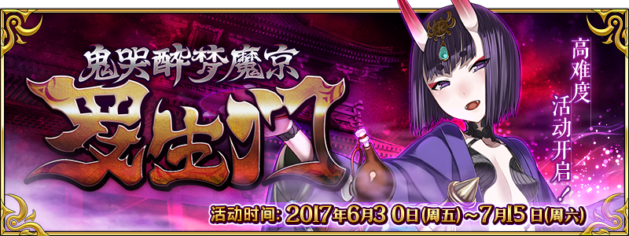

本頁面資訊僅供參考，實際情況請以遊戲內資料為準。
由於直接使用官方翻譯，可能會與其他站內翻譯相異，敬請見諒。
其他公告內容請參照日版當時公告翻譯。
- 主線關卡
- 討伐戰
-
鬼哭討伐戰 鬼游級 第1日 消耗BP 推薦Lv. 初次報酬 開放條件 1 50 無 1/30 13:00~1/31 23:59
通過：開幕 平安櫻前線∞ 職階傾向 QP Exp 絆 

5,400 10,190 515 Wave 1 1  Lv.45 醉酒城裡人 HP9,693
Lv.45 醉酒城裡人 HP9,6932 Lv.45 醉酒城裡人 HP9,6933 Lv.45 醉酒城裡人 HP9,693Wave 2 1  Lv.30 鬼之左腕 HP50,166
Lv.30 鬼之左腕 HP50,1662  Lv.62 茨木童子 HP300,000
Lv.62 茨木童子 HP300,0003 Lv.30 鬼之右腕 HP50,166掉落總合機率
(可能掉落箱數)31.2%(2) 1.2%(2) 105%(3) 300%(3) 鬼哭討伐戰 鬼遣級 第1日 消耗BP 推薦Lv. 初次報酬 開放條件 2 70 無 1/30 13:00~1/31 23:59
通過：開幕 平安櫻前線∞ 職階傾向 QP Exp 絆 7,400 22,190 715 Wave 1 1 Lv.60 醉酒城裡人 HP10,2942 Lv.60 醉酒城裡人 HP10,2943 Lv.60 醉酒城裡人 HP10,294Wave 2 1 Lv.35 鬼之左腕 HP100,2582 Lv.80 茨木童子 HP1,000,0003 Lv.35 鬼之右腕 HP100,258掉落總合機率
(可能掉落箱數)231.6%(2) 1.6%(2) 390%(6) 500%(5) 鬼哭討伐戰 鬼殺級 第1日 消耗BP 推薦Lv. 初次報酬 開放條件 3 90 無 1/30 13:00~1/31 23:59
通過：開幕 平安櫻前線∞ 職階傾向 QP Exp 絆 9,400 38,190 915 Wave 1 1 Lv.80 醉酒城裡人 HP10,5712 Lv.80 醉酒城裡人 HP10,5713 Lv.80 醉酒城裡人 HP10,571Wave 2 1 Lv.45 鬼之左腕 HP150,3912 Lv.95 茨木童子 HP6,000,0003 Lv.45 鬼之右腕 HP150,391掉落總合機率
(可能掉落箱數)32%(2) 2%(2) 1,420%(16) 鬼哭討伐戰 鬼游級 第2日 消耗BP 推薦Lv. 初次報酬 開放條件 1 50 無 2/1 0:00~2/2 23:59
通過：開幕 平安櫻前線
通過：繼戰 重擺架勢∞ 職階傾向 QP Exp 絆 
5,400 10,190 515 Wave 1 1  Lv.45 醉酒城裡人 HP11,632
Lv.45 醉酒城裡人 HP11,6322 Lv.45 醉酒城裡人 HP11,6323 Lv.45 醉酒城裡人 HP11,632Wave 2 1  Lv.30 鬼之左腕 HP60,199
Lv.30 鬼之左腕 HP60,1992 Lv.62 茨木童子 HP300,0003 Lv.30 鬼之右腕 HP60,199掉落總合機率
(可能掉落箱數)31.2%(2) 1.2%(2) 105%(3) 300%(3) 鬼哭討伐戰 鬼遣級 第2日 消耗BP 推薦Lv. 初次報酬 開放條件 2 70 無 2/1 0:00~2/2 23:59
通過：開幕 平安櫻前線
通過：繼戰 重擺架勢∞ 職階傾向 QP Exp 絆 7,400 22,190 715 Wave 1 1 Lv.60 醉酒城裡人 HP12,3532 Lv.60 醉酒城裡人 HP12,3533 Lv.60 醉酒城裡人 HP12,353Wave 2 1 Lv.35 鬼之左腕 HP120,3102 Lv.80 茨木童子 HP1,000,0003 Lv.35 鬼之右腕 HP120,310掉落總合機率
(可能掉落箱數)231.6%(2) 1.6%(2) 390%(6) 500%(5) 鬼哭討伐戰 鬼殺級 第2日 消耗BP 推薦Lv. 初次報酬 開放條件 3 90 無 2/1 0:00~2/2 23:59
通過：開幕 平安櫻前線
通過：繼戰 重擺架勢∞ 職階傾向 QP Exp 絆 9,400 38,190 915 Wave 1 1 Lv.80 醉酒城裡人 HP12,6852 Lv.80 醉酒城裡人 HP12,6853 Lv.80 醉酒城裡人 HP12,685Wave 2 1 Lv.45 鬼之左腕 HP180,4692 Lv.95 茨木童子 HP6,000,0003 Lv.45 鬼之右腕 HP180,469掉落總合機率
(可能掉落箱數)32%(2) 2%(2) 1,420%(16) 鬼哭討伐戰 鬼游級 第3日 消耗BP 推薦Lv. 初次報酬 開放條件 1 50 無 2/3 0:00~2/4 23:59
通過：開幕 平安櫻前線
通過：繼戰 酒氣與休息∞ 職階傾向 QP Exp 絆 
5,400 10,190 515 Wave 1 1  Lv.45 醉酒城裡人 HP13,570
Lv.45 醉酒城裡人 HP13,5702 Lv.45 醉酒城裡人 HP13,5703 Lv.45 醉酒城裡人 HP13,570Wave 2 1  Lv.30 鬼之左腕 HP70,232
Lv.30 鬼之左腕 HP70,2322 Lv.62 茨木童子 HP300,0003 Lv.30 鬼之右腕 HP70,232掉落總合機率
(可能掉落箱數)31.2%(2) 1.2%(2) 105%(3) 300%(3) 鬼哭討伐戰 鬼遣級 第3日 消耗BP 推薦Lv. 初次報酬 開放條件 2 70 無 2/3 0:00~2/4 23:59
通過：開幕 平安櫻前線
通過：繼戰 酒氣與休息∞ 職階傾向 QP Exp 絆 7,400 22,190 715 Wave 1 1 Lv.60 醉酒城裡人 HP14,4122 Lv.60 醉酒城裡人 HP14,4123 Lv.60 醉酒城裡人 HP14,412Wave 2 1 Lv.35 鬼之左腕 HP140,3612 Lv.80 茨木童子 HP1,000,0003 Lv.35 鬼之右腕 HP140,361掉落總合機率
(可能掉落箱數)231.6%(2) 1.6%(2) 390%(6) 500%(5) 鬼哭討伐戰 鬼殺級 第3日 消耗BP 推薦Lv. 初次報酬 開放條件 3 90 無 2/3 0:00~2/4 23:59
通過：開幕 平安櫻前線
通過：繼戰 酒氣與休息∞ 職階傾向 QP Exp 絆 9,400 38,190 915 Wave 1 1 Lv.80 醉酒城裡人 HP14,7992 Lv.80 醉酒城裡人 HP14,7993 Lv.80 醉酒城裡人 HP14,799Wave 2 1 Lv.45 鬼之左腕 HP210,5472 Lv.95 茨木童子 HP6,000,0003 Lv.45 鬼之右腕 HP210,547掉落總合機率
(可能掉落箱數)32%(2) 2%(2) 1,420%(16) 鬼哭討伐戰 鬼游級 第4日 消耗BP 推薦Lv. 初次報酬 開放條件 1 50 無 2/5 0:00~2/6 23:59
通過：開幕 平安櫻前線
通過：繼戰 魔京的酒霧∞ 職階傾向 QP Exp 絆 
5,400 10,190 515 Wave 1 1  Lv.45 醉酒城裡人 HP17,447
Lv.45 醉酒城裡人 HP17,4472 Lv.45 醉酒城裡人 HP17,4473 Lv.45 醉酒城裡人 HP17,447Wave 2 1  Lv.30 鬼之左腕 HP90,299
Lv.30 鬼之左腕 HP90,2992 Lv.62 茨木童子 HP300,0003 Lv.30 鬼之右腕 HP90,299掉落總合機率
(可能掉落箱數)31.2%(2) 1.2%(2) 105%(3) 300%(3) 鬼哭討伐戰 鬼遣級 第4日 消耗BP 推薦Lv. 初次報酬 開放條件 2 70 無 2/5 0:00~2/6 23:59
通過：開幕 平安櫻前線
通過：繼戰 魔京的酒霧∞ 職階傾向 QP Exp 絆 7,400 22,190 715 Wave 1 1 Lv.60 醉酒城裡人 HP18,5292 Lv.60 醉酒城裡人 HP18,5293 Lv.60 醉酒城裡人 HP18,529Wave 2 1 Lv.35 鬼之左腕 HP180,4642 Lv.80 茨木童子 HP1,000,0003 Lv.35 鬼之右腕 HP180,464掉落總合機率
(可能掉落箱數)231.6%(2) 1.6%(2) 390%(6) 500%(5) 鬼哭討伐戰 鬼殺級 第4日 消耗BP 推薦Lv. 初次報酬 開放條件 3 90 無 2/5 0:00~2/6 23:59
通過：開幕 平安櫻前線
通過：繼戰 魔京的酒霧∞ 職階傾向 QP Exp 絆 9,400 38,190 915 Wave 1 1 Lv.80 醉酒城裡人 HP19,0282 Lv.80 醉酒城裡人 HP19,0283 Lv.80 醉酒城裡人 HP19,028Wave 2 1 Lv.45 鬼之左腕 HP270,7042 Lv.95 茨木童子 HP6,000,0003 Lv.45 鬼之右腕 HP270,704掉落總合機率
(可能掉落箱數)32%(2) 2%(2) 1,420%(16) 鬼哭討伐戰 鬼游級 第5日 消耗BP 推薦Lv. 初次報酬 開放條件 1 50 無 2/7 0:00~2/8 23:59
通過：開幕 平安櫻前線
通過：繼戰 鬼眾事記∞ 職階傾向 QP Exp 絆 
5,400 10,190 515 Wave 1 1  Lv.45 醉酒城裡人 HP21,325
Lv.45 醉酒城裡人 HP21,3252 Lv.45 醉酒城裡人 HP21,3253 Lv.45 醉酒城裡人 HP21,325Wave 2 1  Lv.40 鬼之左腕 HP110,365
Lv.40 鬼之左腕 HP110,3652 Lv.62 茨木童子 HP300,0003 Lv.40 鬼之右腕 HP110,365掉落總合機率
(可能掉落箱數)31.2%(2) 1.2%(2) 105%(3) 300%(3) 鬼哭討伐戰 鬼遣級 第5日 消耗BP 推薦Lv. 初次報酬 開放條件 2 70 無 2/7 0:00~2/8 23:59
通過：開幕 平安櫻前線
通過：繼戰 鬼眾事記∞ 職階傾向 QP Exp 絆 7,400 22,190 715 Wave 1 1 Lv.60 醉酒城裡人 HP22,6472 Lv.60 醉酒城裡人 HP22,6473 Lv.60 醉酒城裡人 HP22,647Wave 2 1 Lv.46 鬼之左腕 HP220,5682 Lv.80 茨木童子 HP1,000,0003 Lv.46 鬼之右腕 HP220,568掉落總合機率
(可能掉落箱數)231.6%(2) 1.6%(2) 390%(6) 500%(5) 鬼哭討伐戰 鬼殺級 第5日 消耗BP 推薦Lv. 初次報酬 開放條件 3 90 無 2/7 0:00~2/8 23:59
通過：開幕 平安櫻前線
通過：繼戰 鬼眾事記∞ 職階傾向 QP Exp 絆 9,400 38,190 915 Wave 1 1 Lv.80 醉酒城裡人 HP23,2562 Lv.80 醉酒城裡人 HP23,2563 Lv.80 醉酒城裡人 HP23,256Wave 2 1 Lv.53 鬼之左腕 HP330,8602 Lv.95 茨木童子 HP6,000,0003 Lv.53 鬼之右腕 HP330,860掉落總合機率
(可能掉落箱數)32%(2) 2%(2) 1,420%(16) 鬼哭討伐戰 鬼游級 第6日 消耗BP 推薦Lv. 初次報酬 開放條件 1 50 無 2/9 0:00~2/10 23:59
通過：開幕 平安櫻前線
通過：繼戰 酒吞的記憶∞ 職階傾向 QP Exp 絆 
5,400 10,190 515 Wave 1 1  Lv.45 醉酒城裡人 HP25,202
Lv.45 醉酒城裡人 HP25,2022 Lv.45 醉酒城裡人 HP25,2023 Lv.45 醉酒城裡人 HP25,202Wave 2 1  Lv.40 鬼之左腕 HP130,432
Lv.40 鬼之左腕 HP130,4322 Lv.62 茨木童子 HP300,0003 Lv.40 鬼之右腕 HP130,432掉落總合機率
(可能掉落箱數)31.2%(2) 1.2%(2) 105%(3) 300%(3) 鬼哭討伐戰 鬼遣級 第6日 消耗BP 推薦Lv. 初次報酬 開放條件 2 70 無 2/9 0:00~2/10 23:59
通過：開幕 平安櫻前線
通過：繼戰 酒吞的記憶∞ 職階傾向 QP Exp 絆 7,400 22,190 715 Wave 1 1 Lv.60 醉酒城裡人 HP26,7642 Lv.60 醉酒城裡人 HP26,7643 Lv.60 醉酒城裡人 HP26,764Wave 2 1 Lv.46 鬼之左腕 HP260,6712 Lv.80 茨木童子 HP1,000,0003 Lv.46 鬼之右腕 HP260,671掉落總合機率
(可能掉落箱數)231.6%(2) 1.6%(2) 390%(6) 500%(5) 鬼哭討伐戰 鬼殺級 第6日 消耗BP 推薦Lv. 初次報酬 開放條件 3 90 無 2/9 0:00~2/10 23:59
通過：開幕 平安櫻前線
通過：繼戰 酒吞的記憶∞ 職階傾向 QP Exp 絆 9,400 38,190 915 Wave 1 1 Lv.80 醉酒城裡人 HP27,4852 Lv.80 醉酒城裡人 HP27,4853 Lv.80 醉酒城裡人 HP27,485Wave 2 1 Lv.53 鬼之左腕 HP391,0172 Lv.95 茨木童子 HP6,000,0003 Lv.53 鬼之右腕 HP391,017掉落總合機率
(可能掉落箱數)32%(2) 2%(2) 1,420%(16) 鬼哭討伐戰 鬼游級 第7日 消耗BP 推薦Lv. 初次報酬 開放條件 1 50 無 2/11 0:00~2/12 12:59
通過：開幕 平安櫻前線
通過：繼戰 茨木的意氣∞ 職階傾向 QP Exp 絆 5,400 10,190 515 Wave 1 1  Lv.45 醉酒城裡人 HP25,202
Lv.45 醉酒城裡人 HP25,2022 Lv.45 醉酒城裡人 HP25,2023 Lv.45 醉酒城裡人 HP25,202Wave 2 1 Lv.40 鬼之左腕 HP130,4322 Lv.62 茨木童子 HP300,0003 Lv.40 鬼之右腕 HP130,432掉落總合機率
(可能掉落箱數)31.2%(2) 1.2%(2) 105%(3) 300%(3) 鬼哭討伐戰 鬼遣級 第7日 消耗BP 推薦Lv. 初次報酬 開放條件 2 70 無 2/11 0:00~2/12 12:59
通過：開幕 平安櫻前線
通過：繼戰 茨木的意氣∞ 職階傾向 QP Exp 絆 7,400 22,190 715 Wave 1 1 Lv.60 醉酒城裡人 HP26,7642 Lv.60 醉酒城裡人 HP26,7643 Lv.60 醉酒城裡人 HP26,764Wave 2 1 Lv.46 鬼之左腕 HP260,6712 Lv.80 茨木童子 HP1,000,0003 Lv.46 鬼之右腕 HP260,671掉落總合機率
(可能掉落箱數)231.6%(2) 1.6%(2) 390%(6) 500%(5) 鬼哭討伐戰 鬼殺級 第7日 消耗BP 推薦Lv. 初次報酬 開放條件 3 90 無 2/11 0:00~2/12 12:59
通過：開幕 平安櫻前線
通過：繼戰 茨木的意氣∞ 職階傾向 QP Exp 絆 9,400 38,190 915 Wave 1 1 Lv.80 醉酒城裡人 HP27,4852 Lv.80 醉酒城裡人 HP27,4853 Lv.80 醉酒城裡人 HP27,485Wave 2 1 Lv.53 鬼之左腕 HP391,0172 Lv.95 茨木童子 HP6,000,0003 Lv.53 鬼之右腕 HP391,017掉落總合機率
(可能掉落箱數)32%(2) 2%(2) 1,420%(16) - 繼續戰
-
繼戰 重擺架勢 消耗BP 推薦Lv. 初次報酬 開放條件 1 50 1/30 13:00~2/12 12:59
通過：開幕 平安櫻前線
討伐：「鬼哭醉夢魔京 羅生門」第1階段〉 職階傾向 QP Exp 絆 5,400 10,190 515 Wave 1 1 Lv.45 醉酒城裡人 HP9,6932 Lv.45 醉酒城裡人 HP9,6933 Lv.45 醉酒城裡人 HP9,693Wave 2 1 Lv.30 鬼之左腕 HP50,1662 Lv.62 茨木童子 HP249,8293 Lv.30 鬼之右腕 HP50,166掉落總合機率
(可能掉落箱數)31.2%(2) 1.2%(2) 105%(3) 300%(3) 繼戰 酒氣與休息 消耗BP 推薦Lv. 初次報酬 開放條件 1 50 1/30 13:00~2/12 12:59
通過：開幕 平安櫻前線
通過：繼戰 重擺架勢
討伐：「鬼哭醉夢魔京 羅生門」第2階段〉 職階傾向 QP Exp 絆 5,400 10,190 515 Wave 1 1 Lv.45 醉酒城裡人 HP11,6322 Lv.45 醉酒城裡人 HP11,6323 Lv.45 醉酒城裡人 HP11,632Wave 2 1 Lv.30 鬼之左腕 HP60,1992 Lv.62 茨木童子 HP299,7953 Lv.30 鬼之右腕 HP60,199掉落總合機率
(可能掉落箱數)31.2%(2) 1.2%(2) 105%(3) 300%(3) 繼戰 魔京的酒霧 消耗BP 推薦Lv. 初次報酬 開放條件 1 50 1/30 13:00~2/12 12:59
通過：開幕 平安櫻前線
通過：繼戰 酒氣與休息
討伐：「鬼哭醉夢魔京 羅生門」第3階段〉 職階傾向 QP Exp 絆 5,400 10,190 515 Wave 1 1 Lv.45 醉酒城裡人 HP13,5702 Lv.45 醉酒城裡人 HP13,5703 Lv.45 醉酒城裡人 HP13,570Wave 2 1 Lv.30 鬼之左腕 HP70,2322 Lv.62 茨木童子 HP349,7613 Lv.30 鬼之右腕 HP70,232掉落總合機率
(可能掉落箱數)31.2%(2) 1.2%(2) 105%(3) 300%(3) 繼戰 鬼眾事記 消耗BP 推薦Lv. 初次報酬 開放條件 1 50 1/30 13:00~2/12 12:59
通過：開幕 平安櫻前線
通過：繼戰 魔京的酒霧
討伐：「鬼哭醉夢魔京 羅生門」第4階段〉 職階傾向 QP Exp 絆 5,400 10,190 515 Wave 1 1 Lv.45 醉酒城裡人 HP17,4472 Lv.45 醉酒城裡人 HP17,4473 Lv.45 醉酒城裡人 HP17,447Wave 2 1 Lv.30 鬼之左腕 HP90,2992 Lv.62 茨木童子 HP449,6923 Lv.30 鬼之右腕 HP90,299掉落總合機率
(可能掉落箱數)31.2%(2) 1.2%(2) 105%(3) 300%(3) 繼戰 酒吞的記憶 消耗BP 推薦Lv. 初次報酬 開放條件 1 50 1/30 13:00~2/12 12:59
通過：開幕 平安櫻前線
通過：繼戰 鬼眾事記
討伐：「鬼哭醉夢魔京 羅生門」第5階段〉 職階傾向 QP Exp 絆 5,400 10,190 515 Wave 1 1 Lv.45 醉酒城裡人 HP21,3252 Lv.45 醉酒城裡人 HP21,3253 Lv.45 醉酒城裡人 HP21,325Wave 2 1 Lv.40 鬼之左腕 HP110,3652 Lv.62 茨木童子 HP549,6243 Lv.40 鬼之右腕 HP110,365掉落總合機率
(可能掉落箱數)31.2%(2) 1.2%(2) 105%(3) 300%(3) 繼戰 茨木的意氣 消耗BP 推薦Lv. 初次報酬 開放條件 1 50 1/30 13:00~2/12 12:59
通過：開幕 平安櫻前線
通過：繼戰 酒吞的記憶
討伐：「鬼哭醉夢魔京 羅生門」第6階段〉 職階傾向 QP Exp 絆 5,400 10,190 515 Wave 1 1 Lv.45 醉酒城裡人 HP25,2022 Lv.45 醉酒城裡人 HP25,2023 Lv.45 醉酒城裡人 HP25,202Wave 2 1 Lv.46 鬼之左腕 HP130,4322 Lv.62 茨木童子 HP649,5553 Lv.46 鬼之右腕 HP130,432掉落總合機率
(可能掉落箱數)31.2%(2) 1.2%(2) 105%(3) 300%(3) 決戰 戰敗之鬼 消耗BP 推薦Lv. 初次報酬 開放條件 1 50 1/30 13:00~2/12 12:59
通過：開幕 平安櫻前線
通過：繼戰 茨木的意氣
討伐：「鬼哭醉夢魔京 羅生門」第7階段〉 職階傾向 QP Exp 絆 5,400 10,190 515 Wave 1 1 Lv.45 醉酒城裡人 HP25,2022 Lv.45 醉酒城裡人 HP25,2023 Lv.45 醉酒城裡人 HP25,202Wave 2 1 Lv.53 鬼之左腕 HP130,4322 Lv.62 茨木童子 HP649,5553 Lv.53 鬼之右腕 HP130,432掉落總合機率
(可能掉落箱數)31.2%(2) 1.2%(2) 105%(3) 300%(3) 終末 醉夢覺醒 消耗AP 推薦Lv. 初次報酬 開放條件 1 50 1/30 13:00~2/12 12:59
通過：開幕 平安櫻前線
通過：決戰 戰敗之鬼〉 職階傾向 QP Exp 絆 5,400 10,190 515 Wave 1 1  Lv.25 酒吞童子 HP108,080
Lv.25 酒吞童子 HP108,080掉落總合機率
(可能掉落箱數)5100%(1)
| 報酬 | 點數 | 報酬 | 點數 | 報酬 | 點數 | 報酬 | 點數 |
|---|---|---|---|---|---|---|---|
500000 | 30,000 | 30,000,000 | 55,320,000 | 100,000,000 | |||
| 830,000 | 30,440,000 | 55,930,000 | 102,600,000 | ||||
10 | 1,630,000 | 20 | 30,880,000 | 56,540,000 | 105,200,000 | ||
| 2,430,000 | 1000000 | 31,320,000 | 1000000 | 57,150,000 | 107,800,000 | ||
| 3,230,000 | 31,760,000 | 57,760,000 | 110,000,000 | ||||
| 4,000,000 | 32,200,000 | 58,370,000 | 113,000,000 | ||||
20 | 4,800,000 | 32,640,000 | 58,980,000 | 115,600,000 | |||
| 5,600,000 | 33,080,000 | 59,590,000 | 118,200,000 | ||||
| 6,400,000 | 33,520,000 | 60,000,000 | 120,000,000 | ||||
500000 | 7,200,000 | 33,960,000 | 2000000 | 60,810,000 | 123,400,000 | ||
| 8,000,000 | 500000 | 34,400,000 | 61,420,000 | 126,000,000 | |||
| 9,000,000 | 34,840,000 | 2000000 | 62,030,000 | 128,600,000 | |||
| 9,720,000 | 1000000 | 35,280,000 | 62,640,000 | 130,000,000 | |||
10 | 10,440,000 | 50 | 35,720,000 | 63,250,000 | 133,000,000 | ||
1000000 | 11,160,000 | 36,160,000 | 63,860,000 | 50 | 136,000,000 | ||
| 11,880,000 | 36,600,000 | 64,470,000 | 138,000,000 | ||||
| 12,600,000 | 37,000,000 | 65,080,000 | 140,000,000 | ||||
| 13,320,000 | 37,480,000 | 5000000 | 65,690,000 | 143,000,000 | |||
500000 | 14,000,000 | 38,000,000 | 66,300,000 | 146,800,000 | |||
| 14,760,000 | 38,360,000 | 66,910,000 | 150,000,000 | ||||
| 15,480,000 | 38,800,000 | 67,520,000 | 50 | 155,000,000 | |||
500000 | 16,200,000 | 39,240,000 | 68,130,000 | 5000000 | 160,000,000 | ||
| 17,000,000 | 39,680,000 | 68,740,000 | 162,000,000 | ||||
10 | 17,420,000 | 40,000,000 | 69,350,000 | 100 | 164,000,000 | ||
| 17,840,000 | 40,560,000 | 70,000,000 | 166,000,000 | ||||
| 18,260,000 | 1000000 | 41,000,000 | 70,570,000 | 5000000 | 168,000,000 | ||
1000000 | 18,680,000 | 41,440,000 | 71,180,000 | 170,000,000 | |||
20 | 19,000,000 | 41,880,000 | 72,000,000 | 172,000,000 | |||
| 19,520,000 | 42,320,000 | 73,000,000 | 174,000,000 | ||||
| 19,940,000 | 42,760,000 | 74,160,000 | 5000000 | 176,000,000 | |||
500000 | 20,360,000 | 500000 | 43,200,000 | 75,240,000 | 100 | 178,000,000 | |
| 20,780,000 | 43,640,000 | 76,320,000 | 180,000,000 | ||||
| 21,200,000 | 44,000,000 | 77,400,000 | 182,000,000 | ||||
10 | 21,620,000 | 44,520,000 | 78,400,000 | 100 | 184,000,000 | ||
1000000 | 22,000,000 | 45,000,000 | 79,200,000 | 186,000,000 | |||
| 22,460,000 | 45,400,000 | 80,000,000 | 188,000,000 | ||||
20 | 22,880,000 | 2000000 | 45,840,000 | 81,720,000 | 190,000,000 | ||
| 23,300,000 | 46,280,000 | 82,800,000 | 192,000,000 | ||||
500000 | 23,720,000 | 1000000 | 46,720,000 | 83,880,000 | 194,000,000 | ||
| 24,140,000 | 50 | 47,160,000 | 84,960,000 | 196,000,000 | |||
| 24,560,000 | 47,600,000 | 86,040,000 | 198,000,000 | ||||
| 25,000,000 | 48,000,000 | 87,120,000 | 200,000,000 | ||||
500000 | 25,400,000 | 48,610,000 | 88,200,000 | 210,000,000 | |||
| 25,820,000 | 49,220,000 | 89,000,000 | 220,000,000 | ||||
10 | 26,240,000 | 49,830,000 | 90,000,000 | 230,000,000 | |||
| 26,660,000 | 50,000,000 | 2000000 | 91,440,000 | 240,000,000 | |||
1000000 | 27,000,000 | 51,050,000 | 92,520,000 | 250,000,000 | |||
| 27,500,000 | 1000000 | 51,660,000 | 5000000 | 93,600,000 | 260,000,000 | ||
20 | 28,000,000 | 52,270,000 | 94,680,000 | 270,000,000 | |||
| 28,340,000 | 52,880,000 | 95,760,000 | 280,000,000 | ||||
| 28,760,000 | 2000000 | 53,490,000 | 96,840,000 | 290,000,000 | |||
500000 | 29,000,000 | 54,100,000 | 97,920,000 | 300,000,000 | |||
| 29,600,000 | 54,710,000 | 99,000,000 |
| 任務 | 獎勵 | 解鎖條件 |
|---|---|---|
| No.1「給第1日的茨木童子造成500,000以上的傷害」 | 1/30 13:00後 | |
| No.2「給第1日的茨木童子造成1,000,000以上的傷害」 | 1/30 13:00後 | |
| No.3「給第1日的茨木童子造成2,000,000以上的傷害」 | 1/30 13:00後 | |
| No.4「通關1次第1日的關卡」 | 10 | 1/30 13:00後 |
| No.5「通關3次第1日的關卡」 | 20 | 1/30 13:00後 |
| No.6「通關5次第1日的關卡」 | 30 | 1/30 13:00後 |
| No.7「給第2日的茨木童子造成500,000以上的傷害」 | 2/1 0:00後 | |
| No.8「給第2日的茨木童子造成1,000,000以上的傷害」 | 2/1 0:00後 | |
| No.9「給第2日的茨木童子造成2,000,000以上的傷害」 | 2/1 0:00後 | |
| No.10「給第2日的茨木童子造成3,000,000以上的傷害」 | 2/1 0:00後 | |
| No.11「給第2日的茨木童子造成5,000,000以上的傷害」 | 5 | 2/1 0:00後 |
| No.12「通關1次第2日的關卡」 | 10 | 2/1 0:00後 |
| No.13「通關3次第2日的關卡」 | 20 | 2/1 0:00後 |
| No.14「通關5次第2日的關卡」 | 30 | 2/1 0:00後 |
| No.15「給第3日的茨木童子造成500,000以上的傷害」 | 2/3 0:00後 | |
| No.16「給第3日的茨木童子造成1,000,000以上的傷害」 | 2/3 0:00後 | |
| No.17「給第3日的茨木童子造成2,000,000以上的傷害」 | 2/3 0:00後 | |
| No.18「給第3日的茨木童子造成3,000,000以上的傷害」 | 2/3 0:00後 | |
| No.19「給第3日的茨木童子造成5,000,000以上的傷害」 | 5 | 2/3 0:00後 |
| No.20「給第3日的茨木童子造成8,000,000以上的傷害」 | 2/3 0:00後 | |
| No.21「通關1次第3日的關卡」 | 10 | 2/3 0:00後 |
| No.22「通關3次第3日的關卡」 | 20 | 2/3 0:00後 |
| No.23「通關5次第3日的關卡」 | 30 | 2/3 0:00後 |
| No.24「給第4日的茨木童子造成500,000以上的傷害」 | 2/5 0:00後 | |
| No.25「給第4日的茨木童子造成1,000,000以上的傷害」 | 2/5 0:00後 | |
| No.26「給第4日的茨木童子造成2,000,000以上的傷害」 | 2/5 0:00後 | |
| No.27「給第4日的茨木童子造成3,000,000以上的傷害」 | 2/5 0:00後 | |
| No.28「給第4日的茨木童子造成5,000,000以上的傷害」 | 5 | 2/5 0:00後 |
| No.29「給第4日的茨木童子造成8,000,000以上的傷害」 | 2/5 0:00後 | |
| No.30「給第4日的茨木童子造成10,000,000以上的傷害」 | 5 | 2/5 0:00後 |
| No.31「通關1次第4日的關卡」 | 10 | 2/5 0:00後 |
| No.32「通關3次第4日的關卡」 | 20 | 2/5 0:00後 |
| No.33「通關5次第4日的關卡」 | 30 | 2/5 0:00後 |
| No.34「給第5日的茨木童子造成500,000以上的傷害」 | 2/7 0:00後 | |
| No.35「給第5日的茨木童子造成1,000,000以上的傷害」 | 2/7 0:00後 | |
| No.36「給第5日的茨木童子造成2,000,000以上的傷害」 | 2/7 0:00後 | |
| No.37「給第5日的茨木童子造成3,000,000以上的傷害」 | 2/7 0:00後 | |
| No.38「給第5日的茨木童子造成5,000,000以上的傷害」 | 5 | 2/7 0:00後 |
| No.39「給第5日的茨木童子造成8,000,000以上的傷害」 | 2/7 0:00後 | |
| No.40「給第5日的茨木童子造成10,000,000以上的傷害」 | 5 | 2/7 0:00後 |
| No.41「給第5日的茨木童子造成15,000,000以上的傷害」 | 5 | 2/7 0:00後 |
| No.42「通關1次第5日的關卡」 | 10 | 2/7 0:00後 |
| No.43「通關3次第5日的關卡」 | 20 | 2/7 0:00後 |
| No.44「通關5次第5日的關卡」 | 30 | 2/7 0:00後 |
| No.45「給第6日的茨木童子造成500,000以上的傷害」 | 2/9 0:00後 | |
| No.46「給第6日的茨木童子造成1,000,000以上的傷害」 | 2/9 0:00後 | |
| No.47「給第6日的茨木童子造成2,000,000以上的傷害」 | 2/9 0:00後 | |
| No.48「給第6日的茨木童子造成3,000,000以上的傷害」 | 2/9 0:00後 | |
| No.49「給第6日的茨木童子造成5,000,000以上的傷害」 | 5 | 2/9 0:00後 |
| No.50「給第6日的茨木童子造成8,000,000以上的傷害」 | 2/9 0:00後 | |
| No.51「給第6日的茨木童子造成10,000,000以上的傷害」 | 5 | 2/9 0:00後 |
| No.52「給第6日的茨木童子造成15,000,000以上的傷害」 | 5 | 2/9 0:00後 |
| No.53「通關1次第6日的關卡」 | 10 | 2/9 0:00後 |
| No.54「通關3次第6日的關卡」 | 20 | 2/9 0:00後 |
| No.55「通關5次第6日的關卡」 | 30 | 2/9 0:00後 |
| No.56「給最終日的茨木童子造成500,000以上的傷害」 | 2/11 0:00後 | |
| No.57「給最終日的茨木童子造成1,000,000以上的傷害」 | 2/11 0:00後 | |
| No.58「給最終日的茨木童子造成2,000,000以上的傷害」 | 2/11 0:00後 | |
| No.59「給最終日的茨木童子造成3,000,000以上的傷害」 | 2/11 0:00後 | |
| No.60「給最終日的茨木童子造成5,000,000以上的傷害」 | 5 | 2/11 0:00後 |
| No.61「給最終日的茨木童子造成8,000,000以上的傷害」 | 2/11 0:00後 | |
| No.62「給最終日的茨木童子造成10,000,000以上的傷害」 | 5 | 2/11 0:00後 |
| No.63「給最終日的茨木童子造成15,000,000以上的傷害」 | 5 | 2/11 0:00後 |
| No.64「給最終日的茨木童子造成20,000,000以上的傷害」 | 5 | 2/11 0:00後 |
| No.65「給最終日的茨木童子造成25,000,000以上的傷害」 | 2/11 0:00後 | |
| No.66「通關1次最終日的關卡」 | 10 | 2/11 0:00後 |
| No.67「通關3次最終日的關卡」 | 20 | 2/11 0:00後 |
| No.68「通關5次最終日的關卡」 | 30 | 2/11 0:00後 |
| 鬼葫蘆 | |||
|---|---|---|---|
| 交換物 | 需求數 | 限制 | 共需 |
| 200 | 1 | 200 | |
| 300 | 1 | 300 | |
| 400 | 1 | 400 | |
| 500 | 1 | 500 | |
| 5 | 100 | 500 | |
| 10 | 100 | 1,000 | |
| 30 | 20 | 600 | |
| 30 | 20 | 600 | |
| 80 | 10 | 800 | |
| 60 | 10 | 600 | |
| 40 | 20 | 800 | |
| 30 | 20 | 600 | |
| 30 | 20 | 600 | |
| 30 | 20 | 600 | |
| 30 | 20 | 600 | |
| 30 | 20 | 600 | |
| 50 | 20 | 1,000 | |
| 50 | 20 | 1,000 | |
| 50 | 20 | 1,000 | |
| 3 | 0 | 0 | |
| 2 | 500 | 1,000 | |
| 合計 | 13,300 | ||
| 黃金飯糰 | |||
|---|---|---|---|
| 交換物 | 需求數 | 限制 | 共需 |
| 1 | 0 | 0 | |
| 合計 | 0 | ||
| 力量飯糰 | |||
|---|---|---|---|
| 交換物 | 需求數 | 限制 | 共需 |
| 1 | 0 | 0 | |
| 合計 | 0 | ||